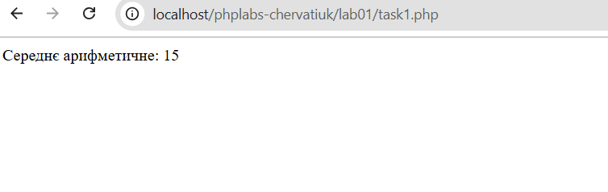
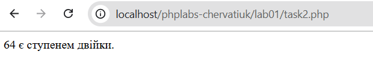

Лабораторна робота №1
Тема: Налаштування середовища PHP розробки
Виконавець: Черватюк Юлія Василівна
Група: KN1-B22
Варіант: 10
Дата виконання: 17.03.2025
Завдання
- 1. Завантажити XAMPP, створити окрему папку для проєктів.
- 2. Встановити Visual Studio Code, налаштувати інтеграцію з XDebug.
- 3. Написати скрипти:
- - Обчислення середнього арифметичного чисел (5, 15, 25).
- - Перевірка, чи є число (64) ступенем двійки.
Завдання 1
Написати PHP-скрипт, який обчислює середнє арифметичне чисел 5, 15, 25.
Перейти до розв’язку

Завдання 2
Реалізувати PHP-функцію, яка перевіряє, чи є задане число (64) ступенем двійки.
Перейти до розв’язку
